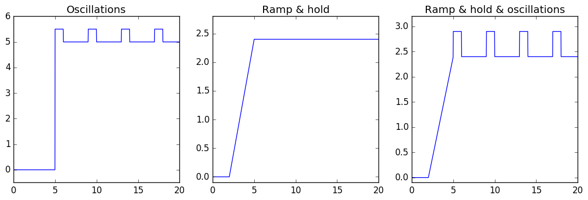

Generating Data
RHEOS has several convenience functions for generating arbitrarily complex loading patterns. These may be particularly useful for investigating the responses of viscoelastic models that users may be unfamiliar with.
using RHEOS
using PyPlotStep 1: Generate timeline
The first step requires the generation of a RheoTimeData struct with only the time data. This is achieved with the timeline function. If no parameter is specified, it generates a time data from (t_start =0) to (t_end=10), with a default time step of (t_start-t_end)/250 = 0.04.
datat = timeline(t_start=0, t_end=20.0, step = 0.02)
RheoTimeDataType(datat)time_only::TimeDataType = 0Note that the same functionality is provided to generate a frequency spectrum by using frequencyspec (see an example of its usage in the Fitting and Predicting - Frequency data section).
Step 2: Generate stress or strain data
The user can decide either to generate strain data (strainfunction function) or stress data (stressfunction function). Both functions require a RheoTimeData with time data defined and a function that takes the time as an input to generate the desired set of data. Both function return a new RheoTimeData struct with time data and either stress or strain data. Below is an example.
# calculates strain data by applying a function of time
dsin=strainfunction(datat,t->sin(2*t));
fig, ax = subplots(1,1, figsize=(8,2));
plot(dsin.t,dsin.ϵ);
RheoTimeDataType(dsin)
strain_only::TimeDataType = 1Pre-defined functions
RHEOS provides some functions that can be directly applied to a timeline. Below is the complete list with examples. Note that if the keyword arguments for the functions are not defined, default parameters are used (see the API section). In the examples below the strain data is generated, the same can be applied to the stress by replacing strainfunction with stressfunction.
fig, ax = subplots(2,3, figsize=(14,7));
# Step generation
dstep = strainfunction(datat,hstep(offset=5.0,amp=5));
# Plotting
ax[1,1].plot(dstep.t,dstep.ϵ);
ax[1,1].set_ylim(bottom = -0.1, top=5.4);
ax[1,1].set_title("Step");
# Ramp generation
dramp = strainfunction(datat,ramp(offset=2.0,gradient=0.8));
ax[1,2].plot(dramp.t,dramp.ϵ);
ax[1,2].set_ylim(bottom = -0.1);
ax[1,2].set_title("Ramp");
# Stairs generation
dstairs = strainfunction(datat,stairs(offset=5.0,amp=0.1,width=1));
ax[1,3].plot(dstairs.t,dstairs.ϵ);
ax[1,3].set_ylim(bottom = -0.1);
ax[1,3].set_title("Stairs");
# Square generation
dsquare = strainfunction(datat,square(offset=5.0,amp=0.5,period=4, width=1));
ax[2,1].plot(dsquare.t,dsquare.ϵ);
ax[2,1].set_ylim(bottom = -0.05, top=0.6);
ax[2,1].set_title("Square");
# Sawtooth generation
dsawtooth = strainfunction(datat,sawtooth(offset=5.0,amp=2,period=5));
ax[2,2].plot(dsawtooth.t,dsawtooth.ϵ);
ax[2,2].set_ylim(bottom = -0.1, top=2.2);
ax[2,2].set_title("Sawtooth");
# Triangle generation
dtriangle = strainfunction(datat,triangle(offset=4.0,amp=1,period=4));
ax[2,3].plot(dtriangle.t,dtriangle.ϵ);
ax[2,3].set_ylim(bottom = -0.1, top=1.2);
ax[2,3].set_title("Tringle");
More complex patterns
More complicated patterns can be generated by making use of the possibility to add, subtract, multiply RheoTimeData structs. Note that addition and subtraction can be performed only if the data have the same sample rate.
fig, ax = subplots(1,3,figsize=(14,4));
# Ramp & hold
dhold = dramp - strainfunction(datat,ramp(offset=5.0,gradient=0.8));
ax[2].plot(dhold.t,dhold.ϵ);
ax[2].set_ylim(bottom = -0.1, top=2.8);
ax[2].set_title("Ramp & hold");
# Step with oscillatory loading
doscil = dstep + dsquare;
ax[1].plot(doscil.t,doscil.ϵ);
ax[1].set_ylim(bottom = -0.5, top=6);
ax[1].set_title("Oscillations");
# Ramp & hold & oscillation
dcomplex = dhold + dsquare
ax[3].plot(dcomplex.t,dcomplex.ϵ);
ax[3].set_ylim(bottom = -0.1, top=3.2);
ax[3].set_title("Ramp & hold & oscillations");